정보통신기사(구) (2021-10-15 기출문제)
1과목: 디지털 전자회로
1. 다음 회로에서 제너 다이오드에 흐르는 전류는? (단, 제너 다이오드의 파괴전압은 10[V]이다.)
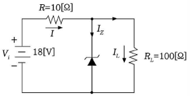
- 0.5[A]
- 0.7[A]
- 1.0[A]
- 1.7[A]
(정답률: 53%)

2. 다음 그림에서 1차측과 2차측의 권선비가 5:1일 때 1차측의 입력전압 Vrms=120[V]이다. 다이오드가 이상적이고 리플리 작다고 가정하면 직류 부하전류는 약 얼마인가?
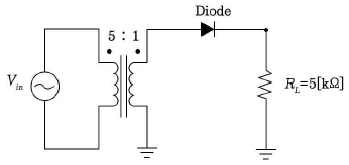
- 1.7[mA]
- 3.4[mA]
- 5.1[mA]
- 6.8[mA]
(정답률: 44%)
3. 다음과 같은 블록에서 출력으로 나타나는 파형이 적합한 것은?
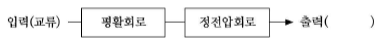
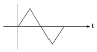
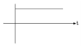
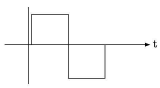
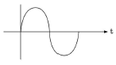
(정답률: 71%)
4. 다음 중 캐스코드 증폭기에 대한 설명으로 틀린 것은?
- 입력단은 공통베이스, 출력단은 공통이미터로 구성된 증폭기이다.
- 전압 궤환율이 매우 적다.
- 공통베이스 증폭기로 인해 고주파 특성이 양호하다.
- 자기 발진 가능성이 매우 적다.
(정답률: 34%)
5. 다음 그림과 같은 회로에서 결합계수가 0.5이고, 발진주파수가 200[kHz]일 경우 C의 값은 얼마인가? (단, π=3.14이고, L1=L2=1[mH]로 가정한다.)
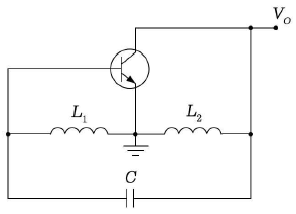
- 211.3[㎌]
- 211.3[pF]
- 422.6[㎌]
- 422.6[pF]
(정답률: 56%)
6. 다음 그림과 같은 발진회로에서 높은 주파수의 동작에 적절한 발진회로 구현을 위한 리액턴스 조건은 무엇인가?
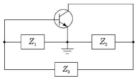
- Z1=용량성, Z2=용량성, Z3=용량성
- Z1=유도성, Z2=유도성, Z3=유도성
- Z1=유도성, Z2=용량성, Z3=용량성
- Z1=용량성, Z2=용량성, Z3=유도성
(정답률: 77%)
7. 다음 중 연산증폭기의 응용회로가 아닌 것은?
- 부호변환기
- 배수기
- 교류전류 플로워
- 전압-전류 변환기
(정답률: 50%)
8. 다음 차동증폭 회로에서 주어진 전압 및 전류 조건에 맞는 직류 IV-곡선으로 맞는 것은? (IRC1=IRC2=3.25[mA], VE=0.7[V]이다.)
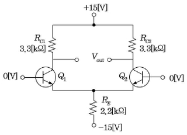
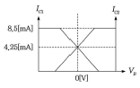
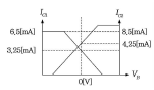
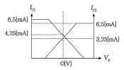
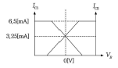
(정답률: 50%)
9. 다음 중 OP-AMP 성능을 판단하는 파라미터로 관련이 없는 것은?
- Vi0(입력 오프셋 전압)
- CMRR(동상 신호 제거비)
- IB(입력 바이어스 전류)
- PIV(최대 역 전압)
(정답률: 57%)
10. 발진회로의 출력이 직접 부하와 결합되면 부하의 변동으로 인하여 발진주파수가 변동된다. 이에 대한 대책이 아닌 것은?
- 정전압 회로를 사용한다.
- 발진회로와 부하 사이에 완충증폭기를 접속한다.
- 발진회로를 온도가 일정한 곳에 둔다.
- 다음 단과의 결합을 밀 결합으로 한다.
(정답률: 69%)
11. 다음 중 아날로그 신호로부터 디지털 부호를 얻는 방법이 아닌 것은?
- PM(Phase Modulation)
- DM(Delta Modulation)
- PCM(Pulse Code Modulation)
- DPCM(Differential Pulse Code Modulation)
(정답률: 67%)
12. 포스터 실리 검파 회로와 비검파 회로와의 검파 감도 비는?
- 1:3
- 3:1
- 1:2
- 2:1
(정답률: 61%)
13. FM수신기에 사용되는 주파수변별기의 역할은?
- 주파수 변화를 진폭 변화로 바꾸어준다.
- 진폭 변화를 위상 변화로 바꾸어준다.
- 주파수체배를 행한다.
- 최대주파수편이를 증가시킨다.
(정답률: 69%)
14. 다음 중 4진 PSK에서 BPSK와 같은 양의 정보를 전송하기 위해 필요한 대역폭은?
- BPSK의 0.5배
- BPSK와 같은 대역폭
- BPSK의 2배
- BPSK의 4배
(정답률: 58%)
15. 다음 중 저역 통과 RC회로에서 시정수가 의미하는 것은?
- 응답의 위치를 결정해준다.
- 입력의 주기를 결정해준다.
- 입력의 진폭 크기를 표시한다.
- 응답의 상승속도를 표시한다.
(정답률: 69%)
16. 다음 회로는 무엇을 가리키는가?
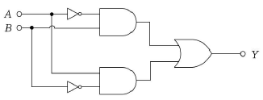
- 배타적 논리합 회로(Exclusive-OR)
- 감산기(Subtractor)
- 반가산기(Half adder)
- 전가산기(Full adder)
(정답률: 69%)
17. RS 플립플롭 회로의 출력 Q 및
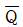
는 리셋(Reset) 상태에서 어떠한 논리값을 가지는가?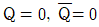
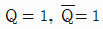
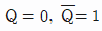
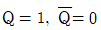
(정답률: 68%)
18. 다음 중 파형 조작 회로에서 클리퍼(Clipper)회로에 대한 설명으로 옳은 것은?
- 입력 파형에서 특정한 기준 레벨의 윗부분 또는 아랫부분을 제거하는 것
- 입력 파형에 직류분을 가하여 출력 레벨을 일정하게 유지하는 것
- 입력 파형 중에서 어떤 특정 시간의 파형만 도출하는 것
- 입력의 Step전압을 인가하는 것
(정답률: 77%)
19. 다음 그림과 같은 회로의 논리 동작으로 맞는 것은?
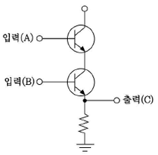
- OR
- AND
- NOR
- NAND
(정답률: 72%)
20. 다음 중 멀티바이브레이터의 동작 특성에 대한 설명으로 틀린 것은?
- 비안정 멀티바이브레이터는 한쪽의 상태에서 다른 쪽의 회로가 가진 시정수에 따라 교번 발진을 계속한다.
- 단안정 멀티바이브레이터는 외부로부터의 트리거에 의해 상태 전이를 일으켜도 일정한 시간이 지나면 다시 원래의 상태로 되돌아온다.
- 쌍안정 멀티바이브레이터는 입력펄스가 공급되기 전까지는 그 상태를 계속 유지한다.
- 쌍안정 멀티바이브레이터는 1개의 펄스가 공급될 때 2개의 출력펄스를 가져 펄스의 주파수를 높이는데 이용한다.
(정답률: 52%)
2과목: 정보통신 시스템
21. 다음 중 출력장치의 기능에 대한 설명인 것은?
- 발생한 정보의 입력을 부호화하여 전기신호로 변환하는 것
- 입·출력장치의 제어 및 호스트 컴퓨터와의 제어를 수행하는 것
- 발생한 정보의 출력을 부호화하여 변환하는 것
- 전기신호를 인간이 이해할 수 있는 형태로 출력하는 것
(정답률: 80%)
22. 다음 중 정보단말기 변조기능의 목적 또는 필요성에 맞지 않는 것은?
- 잡음, 간섭을 줄인다.
- 무선전송매체를 사용하여 전파 복사(Radiation)를 이용하게 한다.
- 전송 신호를 전송매체에 정합시킨다.
- 역다중화가 이루어진다.
(정답률: 70%)
23. Zigbee 네트워크 내에서 반드시 하나만 존재하며, 네트워크 정보의 초기화를 담당하는 것은 무엇인가?
- 코디네이터(Coordinator)
- 라우터(Router)
- 게이트웨이(Gateway)
- 단말장치(Data Terminal)
(정답률: 79%)
24. 어느 센터의 최번시 통화량을 측정하니 1시간 동안에 3분짜리 전화호 100개가 측정되었다. 이 센터의 최번시 통화량은 몇 [Erl]인가?
- 4[Erl]
- 5[Erl]
- 6[Erl]
- 7[Erl]
(정답률: 78%)
25. 침입탐지시스템(IDS)과 방화벽(Firewall)의 기능을 조합한 솔루션은?
- SSO(Single Sign On)
- IPS(Intrusion Prevention System)
- DRM(Digital Rights Management)
- IP관리시스템
(정답률: 80%)
26. 라우터가 패킷을 수신하면 라우터 포트중 단 하나만을 통해 패킷을 전달하는 라우팅을 무엇이라 하는가?
- 싱글캐스트 라우팅
- 유니캐스트 라우팅
- 멀티캐스트 라우팅
- 브로드캐스트 라우팅
(정답률: 75%)
27. 다음 중 DSU에 대한 설명으로 옳지 않은 것은?
- 유니폴라 신호를 바이폴라 신호로 변환시키는 디지털모뎀이다.
- 벨 시스템의 DDS에 사용된다.
- T1/E1간의 타이밍을 보정해 준다.
- 송수신 전단에 위치하여 원거리 디지털전송을 보장한다.
(정답률: 65%)
28. 다음 중 CATV의 헤드앤드(Head End)의 주요 기능이 아닌 것은?
- 채널 변환
- 신호 분리 및 혼합
- 옥내 분배
- 신호 송출
(정답률: 63%)
29. 유선 전화망의 구성 요소로 교환기와 단말기를 연결시켜 주고, 신호와 정보를 전달하는 것은?
- 가입자 선로
- 중계 선로
- 스위치
- 프로그램 기억장치
(정답률: 68%)
30. 초고속 인터넷을 이용하여 다양한 디지털 영상 서비스, 개인맞춤형 서비스, 양방향 데이터 서비스 등을 제공하는 TV로 옳은 것은?
- DTV
- IPTV
- HDTV
- UHDTV
(정답률: 81%)
31. 국내 HDTV방식의 1채널 대역폭은 얼마인가?
- 4[MHz]
- 6[MHz]
- 8[MHz]
- 10[MHz]
(정답률: 76%)
32. 기존의 아날로그 카메라에 설치되어 있는 동축케이블을 활용해 고화질 영상전송이 가능한 디지털 신호 전송방식은?
- DNR
- HD-SDI
- HDMI
- WDR
(정답률: 68%)
33. 다음 중 위성통신의 특징으로 틀린 것은?
- 신호의 전송시간이 지연된다.
- 다원접속이 가능하다.
- 기후 영향을 받지 않는다.
- 동보통신이 가능하다.
(정답률: 71%)
34. 셀룰러 이동통신방식에서 기지국 서비스 영역을 확대하는 방법이 아닌 것은?
- 고이득 지향성 안테나를 사용한다.
- 수신기의 수신 한계레벨을 높게 조정한다.
- 다이버시티 수신기를 사용한다.
- 기지국 안테나 높이를 증가시킨다.
(정답률: 66%)
35. 다음 중 통신위성 트랜스폰더에 대한 구성방법으로 옳지 않은 것은?
- 단일주파수변환(Single Frequency Conversion) 시스템
- 이중주파수변환(Double Frequency Conversion) 시스템
- 기저주파수검파(Regenerative) 시스템
- 대역통과(Bandpass) 시스템
(정답률: 57%)
36. 다음 중 강우로 인한 위성통신 신호의 감쇠를 보상하기 위한 방법이 아닌 것은?
- Site Diversity
- Adaptive Diversity
- Orbit Diversity
- Beam Diversity
(정답률: 46%)
37. 다음 중 지능형 교통시스템에서 통행료 자동지불시스템, 주차장관리, 물류 배송관리, 주유소 요금 지불 등에 활용되는 단거리 무선통신은?
- DSRC
- GPS
- WiBro
- LAN
(정답률: 72%)
38. 다음 중 멀티미디어 디지털 콘텐츠의 저작권 보호를 위한 ‘디지털 워터마킹’에 대한 설명으로 옳지 않은 것은?
- 비가시성으로 눈에 띄지 않아야 한다.
- 왜곡 및 잡음에 강해야 된다.
- 인식을 위해서 원본을 가지고 있어야 한다.
- 최소의 bit를 사용해야 한다.
(정답률: 66%)
39. 다음 중 단순한 전송 기능 이상으로 정보의 축적, 가공, 변환 처리 등의 부가가치를 부여한 음성 또는 데이터 정보를 제공해 주는 복합적인 정보서비스망은?
- DSU
- VAN
- LAN
- MHS
(정답률: 69%)
40. 정보통신 기술을 이용해 시간과 장소의 제약 없이 동료 직원들과 원활하게 협업하고 끊김 없이 업무를 수행가능하게 하는 환경으로 옳은 것은?
- 원격 회의
- 스마트 워크
- 영상 응답 시스템
- 화상 회의 시스템
(정답률: 63%)
3과목: 정보통신 기기
41. 다음 중 PCM 북미방식과 유렵방식의 설명이 옳은 것은?
- 북미방식과 유럽방식의 표본화주파수는 모두 8[kHz]이다.
- 유럽방식은 24채널, 프레임당 비트수는 193비트이다.
- 북미방식은 32채널, 프레임당 비트수는 256비트이다.
- 유럽방식은 15절선, 북미방식은 13절선을 사용한다.
(정답률: 57%)
42. 다음 중 PCM 통신에서 양자화 잡음의 설명으로 적합하지 않은 것은?
- 진폭 값을 디지털 신호로 변환시키는 과정에서 생기는 잡음이다.
- 진폭 값이 양자화 기준 값을 초과하게 된 경우 생기는 잡음이다.
- 양자화 잡음의 크기는 양자화 잡음의 평균전력으로 표현한다.
- 입력 진폭이 작을 때 신호 대 양자화 잡음비가 크게 나빠진다.
(정답률: 49%)
43. PCM 단계 중에서 연속적인 아날로그 신호를 입력으로 받아 불연속적인 진폭을 갖는 펄스를 생성하는 과정에 해당되는 것은?
- 표본화
- 양자화
- 부호화
- 압축기
(정답률: 67%)
44. 신호의 전압이 V(t)=4+5cos20πt+3sin30πt[V]이고, 저항이 1[Ω]일 때 평균전력은 몇 [W]인가?
- 23[W]
- 33[W]
- 43[W]
- 53[W]
(정답률: 62%)
45. 30[m] 높이의 빌딩 옥상에 설치된 안테나로부터 주파수가 2[GHz]인 전파를 송출하려고 한다. 이 전파의 파장은 얼마인가?
- 5[cm]
- 10[cm]
- 15[cm]
- 20[cm]
(정답률: 74%)
46. 다음 중 동축케이블의 전기적 특성 중 2차 정수는?
- 인덕턴스
- 특성임피던스
- 정전용량
- 콘덕턴스
(정답률: 68%)
47. 다음 중 광케이블의 회선손실인 것은?
- 불균등 손실
- 곡률 손실
- 산란 손실
- 접속 손실
(정답률: 49%)
48. 다음 중 이동통신망에서 기지국 간에 통화채널을 절체하는 핸드오버기술 가운데서 소프트 핸드오버(Soft Hand over)의 가장 큰 장점으로 알맞은 것은?
- 신호대 잡음비(S/N)가 개선된다.
- 기지국(BS)의 서비스 커버리지가 넓어진다.
- 통화채널 용량이 증가한다.
- 단절이 없이 부드럽게 통화 채널 절체가 이루어진다.
(정답률: 75%)
49. 다음 중 동축케이블의 특징으로 틀린 것은?
- 차폐된 구조를 가진 케이블이다.
- 외부도체는 신호전송용으로 사용한다.
- 2선식 케이블의 표피효과를 보완한 케이블이다.
- 세심동축케이블의 내경/외경은 1.2/4.4[mm]이다.
(정답률: 61%)
50. 입력 데이터 비트율(Bit Rate)이 4,800[bps]일 때, 맨체스터 부호인 경우 심볼률 및 대역폭은 각각 얼마인가?
- 2,400[symbols/sec], 2,400[Hz]
- 4,800[symbols/sec], 4,800[Hz]
- 9,600[symbols/sec], 9,600[Hz]
- 12,000[symbols/sec], 12,000[Hz]
(정답률: 67%)
51. 다음 중 반송대역전송(Bandpass Transmission)에서 디지털 신호의 변환 대상이 아닌 것은?
- 진폭
- 위상
- 부호
- 주파수
(정답률: 69%)
52. 플래그 동기방식에서 비트스터핑(Bit Stuffing)을 행하는 목적은?
- 프레임 검사 시퀀스의 구분
- 데이터의 투명성 보장
- 정보부 암호화
- 데이터 변환
(정답률: 60%)
53. 비동기 전송방식의 특징으로 가장 옳은 것은?
- 문자와 문자 사이에 일정치 않은 휴지 시간이 존재 할 수 있다.
- 시작 비트와 정지 비트 없이 출발과 도착 시간이 정확한 방식이다.
- 비트열이 하나의 블록 또는 프레임의 형태로 전송된다.
- 모뎀이 단말기에 타이밍 펄스를 제공하여 동기가 이루어진다.
(정답률: 75%)
54. 다음 중 서브넷마스크에 대한 설명으로 틀린 것은?
- IP주소와 대응되는 비트간에 AND 연산을 적용한다.
- 네트워크 ID를 서브넷 ID와 호스트 ID로 구분한다.
- 호스트 ID에 해당되는 부분은 0으로 설정한다.
- 서브넷마스크는 32비트의 이진수로 구성된다.
(정답률: 46%)
55. 다음 IP주소들이 어느 클래스에 속하는 지를 알맞게 연결한 것은?
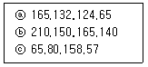
- ⓐ C클래스, ⓑ E클래스, ⓒ D클래스
- ⓐ A클래스, ⓑ B클래스, ⓒ C클래스
- ⓐ B클래스, ⓑ C클래스, ⓒ A클래스
- ⓐ A클래스, ⓑ B클래스, ⓒ D클래스
(정답률: 82%)
56. 다음 중 IP주소가 B Class이고 전체를 하나의 네트워크 망으로 사용하고자 할때 적절한 서브넷 마스크 값은?
- 255.0.0.0
- 255.255.0.0
- 255.255.255.0
- 255.255.255.255
(정답률: 75%)
57. 다음 중 IPv4와 IPv6의 연동 방법으로 틀린 것은?
- 이중 스택(Dual Stack)
- 터널링(Tunneling)
- IPv4/IPv6 변환(Translation)
- 라우팅(Routing)
(정답률: 75%)
58. 다음 중 OSI 7 계층에서 경로 설정 기능을 제공하는 계층은?
- 네트워크 계층
- 전달 계층
- 표현 계층
- 물리 계층
(정답률: 72%)
59. 다음 중 OSI(Open System Interconnection) 참조 모델의 목적이 아닌 것은?
- 시스템 상호간에 접속하기 위한 개념 규정
- OSI 표준을 개발하기 위한 범위 선정
- 관련 규격의 적합성을 조정하기 위한 공통적인 기반 제공
- 폐쇄적인 시스템 구축을 위한 법률 규정
(정답률: 77%)
60. 다음 중 착오 제어(에러 제어) 평가 방법이 아닌 것은?
- 전송 에러율
- 비트 에러율
- 블록 에러율
- 문자 에러율
(정답률: 54%)
4과목: 정보전송 공학
61. RS-232C 통신방식에서 DTE와 DCE 사이의 최대 이격 거리는?
- 2[m]
- 5[m]
- 10[m]
- 15[m]
(정답률: 46%)
62. 근거리 통신망(LAN)과 원거리통신망(WAN)을 연결하는 도시지역 통신망은?
- MAN(Metropolitan Area Network)
- NAN(Neighborhood Area Network)
- PAN(Personal Area Network)
- BAN(Body Area Network)
(정답률: 79%)
63. 70개의 노드를 망형으로 연결할 때 필요한 회선수는?
- 780
- 1,225
- 2,415
- 3,160
(정답률: 82%)
64. 다음 중 DSU(Digital Service Unit)의 기능으로 옳은 것은?
- 디지털 데이터를 디지털 신호로 변환
- 아날로그 데이터를 디지털 신호로 변환
- 디지털 신호를 아날로그 데이터로 변환
- 아날로그 신호를 디지털 데이터로 변환
(정답률: 76%)
65. 다음 중 통신 프로토콜의 특성으로 알맞지 않은 것은?
- 두 개체 사이의 통신 방법은 직접 통신과 간접 통신 방법이 있다.
- 프로토콜은 단일 구조 또는 계층적 구조로 구성될 수 있다.
- 프로토콜은 대칭적이거나 비대칭적일수 있다.
- 프로토콜은 반드시 표준이어야 한다.
(정답률: 72%)
66. 다음 중 X.25 표준에 대한 설명으로 틀린 것은?
- ITU-T가 개발한 패킷교환 방식의 장거리 통신망 표준이다.
- X.25 계층 구조는 물리계층, 프레임계층, 상위계층으로 구성되어 있다.
- 패킷 방식 단말이 데이터 교환을 하기위해 어떻게 패킷 네트워크에 연결되는가를 정의한다.
- 패킷의 다중화는 비동기식 TDM을 사용한다.
(정답률: 68%)
67. 다음 중 HDLC 프로토콜에 대한 설명으로 옳지 않은 것은?
- 바이트방식의 프로토콜이다.
- 단방향, 반이중, 전이중방식 모두 사용이 가능하다.
- 데이터링크계층의 프로토콜이다.
- 오류제어방식으로 ARQ 방식을 사용한다.
(정답률: 61%)
68. 통신프로토콜의 기능에 해당하지 않는 것은?
- 표준화
- 단편화와 재합성
- 에러제어
- 동기화
(정답률: 41%)
69. 컴퓨터간의 원활한 정보교환을 위하여 ISO에서 규정한 표준 네트워크 구조는?
- OSI
- DNA
- HDLC
- SNA
(정답률: 73%)
70. 다음은 STM-1 프레임구조를 설명한 내용이다. 비트율 크기가 맞지 않는 것은?
- 재생기 구간 오버헤드(RSOH) : 3 × 9B[byte]
- 다중화기 구간 오버헤드(MSOH) : 5 × 9B[byte]
- 포인터(PTR) :1 × 9B[byte]
- 상위경로 오버헤드를 포함한 유료부하공간 : 160 × 9B[byte]
(정답률: 48%)
71. 위성통신용 지구국의 구성 요소로 옳지 않은 것은?
- 송수신계
- 인터페이스계
- 안테나계
- 자세제어계
(정답률: 62%)
72. 스마트도시(Smart City) 기반시설에 해당하지 않는 것은?
- 기반시설 또는 공공시설에 건설·정보통신 융합기술을 적용하여 지능화된 시설
- 초연결지능통신망
- 도시정보 데이터베이스
- 스마트도시 통합운영센터 등 스마트도시의 관리·운영에 관한 시설
(정답률: 58%)
73. Ethernet에서 사용되는 매체접속 프로토콜은?
- CSMA/CD
- Polling
- Token Passing
- Slotted Ring
(정답률: 72%)
74. 전화통신망(PSTN)에 일반적으로 사용되는 교환방식의 특징이 아닌 것은?
- 호가 연결된 후 데이터 전송 중에는 일정한 경로를 사용한다.
- 축적교환방식의 일종이다.
- 전송지연이 작다.
- 연속적인 데이터 전송에 적합하다.
(정답률: 62%)
75. 미국표준협회(ANSI)에서 개발된 근거리 통신망(LAN) 기술로서, IEEE 802.5 토큰링에 기초를 둔 광섬유토큰링 표준방식은?
- FDDI(Fiber Distributed Data Interface)
- Fast Ethernet
- Gigabit Ethernet
- Frame Relay
(정답률: 70%)
76. 다음 이동통신망 구성 장비 중 대형장애가 동시에 발생 시 처리의 우선순위가 가장 낮은 시스템은 무엇인가?
- MSC
- HLR
- BSC
- BTS
(정답률: 68%)
77. 암호화 형식에서 4명이 통신을 할 때, 서로 간 비밀 통신과 공개통신을 하기 위한 키의 수는?
- 비밀키 2개, 공개키 4개
- 비밀키 4개, 공개키 6개
- 비밀키 6개, 공개키 8개
- 비밀키 8개, 공개키 10개
(정답률: 77%)
78. 보안의 중요성이 점차 증가하고 있다. 다음 중 보안 문제가 심각해지는 원인이 아닌 것은?
- 개방형 네트워크
- 폐쇄형 네트워크
- 인터넷의 확산
- 전자상거래 등 각종 응용서비스의 출현
(정답률: 81%)
79. 네트워크 장비를 하나의 네트워크 관리체계(NME)로 볼 수 있으며 여기에는 네트워크 관리를 위해 사용되는 소프트웨어들을 포함하고 있는데 이들 NME의 역할이 아닌 것은?
- 장비에 들어오고 나가는 프래픽 통계 정보를 수집한다.
- 수집한 통계 정보를 저장한다.
- 관리 호스트로부터의 요청을 처리한다.
- 장비에 이상 발생 시 주위 장비들에 이를 알린다.
(정답률: 55%)
80. 통신망 관리 시스템 네트워크 내에서 소통되는 호의 상황, 설비 상황이나 그의 변동상황을 파악·관리하며 네트워크의 설비 설계, 폭주 관리 설비, 소통관리 등의 역할을 갖는 시스템은?
- 가입자 시설 집중 운용 분산 시스템(Subscriber Line Maintenance and Operation System)
- 장거리 회선 감시 제어 및 운용 관리 시스템
- 트래픽 집중관리 시스템(Centralized Traffic Management System)
- 네트워크 트래픽 시스템(Network Traffic System)
(정답률: 66%)
5과목: 전자계산기일반 및 정보통신설비기준
81. 다음 중 전기통신사업자가 제공하는 보편적 역무의 구체적인 내용을 정할 때 고려사항이 아닌 것은?
- 사회복지 증진
- 정보통신기술의 발전 정도
- 공공의 이익과 안전
- 기간통신사업자의 사업 규모
(정답률: 67%)
82. 다음 중 도급의 정의를 가장 바르게 설명한 것은?
- 발주자가 의뢰한 공사의 설계도서를 작성하고 이에 따라 공사의 공정을 기획 작성
- 공사업자가 공사를 완공할 것을 약정하고, 발주자가 그 일의 결과에 대하여 대가를 지급할 것을 약정하는 계약
- 용역업자가 공사의 시방서를 작성하고 이에 따라 공사기자재를 준비
- 공사업자가 용역업자의 설계도서와 공사시방서에 따라 공사를 시공
(정답률: 74%)
83. 컴퓨터 등 정보처리능력을 가진 장치에 의하여 전자적인 형태로 작성되어 송수신되거나 저장된 문서형식의 자료로서 표준화된 것을 무엇이라 하는가?
- 행정문서
- 전자문서
- 통신문서
- 인증문서
(정답률: 78%)
84. 전기통신사업자가 법원·검사·수사관서의 장, 정보수사기관의 장으로부터 재판, 수사, 형의 집행 또는 국가안전보장에 대한 위해를 방지하기 위한 정보수집을 위하여 자료의 열람이나 제출을 요청받을 때에 응할 수 있는 대상이 아닌 것은?
- 이용자의 성명과 주민등록번호
- 이용자의 주소와 전화번호
- 이용자의 아이디
- 이용자의 동산 및 부동산
(정답률: 77%)
85. 설치장소의 여건에 따른 가공통신선의 설치 높이에 대한 설명으로 옳지 않은 것은?
- 22,900[V]를 수용하는 전압의 가공강 전류전선용 전주에 가설되는 경우에는 노면으로부터 5[m] 이상으로 하여야 한다.
- 도로상 설치되는 경우 노면으로부터 4.5[m] 이상으로 한다.
- 철도 또는 궤도를 횡단하는 경우 차량의 통행에 지장을 줄 우려가 없더라도 열차의 높이 때문에 5[m] 이상으로 하여야 한다.
- 도로상에서 교통에 지장을 줄 염려가 없고 시공상 불가피한 경우 보도와 차도의 구별이 있으면 보도상에서 3[m] 이상으로 한다.
(정답률: 57%)
86. 다음의 설명에서 해당하는 것은?
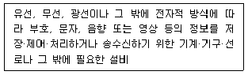
- 전기통신설비
- 자가통신설비
- 전자통신설비
- 정보통신설비
(정답률: 49%)
87. 방송통신설비 기술기준 적합조사를 실시하는 경우가 아닌 것은?
- 방송통신설비 관련 시책을 수립하기 위한 경우
- 국가비상상태를 대비하기 위한 경우
- 신기술 및 신통신방식 도입을 위한 경우
- 방송통신설비의 이상으로 광범위한 통신장애가 발생할 우려가 있는 경우
(정답률: 65%)
88. 다음 중 전기통신기본법의 목적을 달성하기 위하여 전기통신에 관한 기본적이고 종합적인 정보의 시책을 강구하는 기관은?
- 과학기술정보통신부
- 한국방송통신전파진흥원
- 중앙전파관리소
- 한국정보통신공사협회
(정답률: 70%)
89. 다음 중 중요한 통신설비의 설치를 위한 통신국사 및 통신기계실입지조건이 아닌 것은?
- 인적이 많고 지대가 높은 곳
- 풍수해로부터 영향을 많이 받지 않는 곳
- 강력한 전자파장해의 우려가 없는 곳
- 주변지역의 영향으로 인한 진동발생이 적은 곳
(정답률: 79%)
90. 다른 사람의 위탁을 받아 공사에 관한 조사, 설계, 감리, 사업관리 및 유지관리 등의 역무를 수행하는 것을 무엇이 라 하는가?
- 도급
- 수급
- 용역
- 감리
(정답률: 59%)
91. 다음 중 연결 리스트(Linked List)에 대한 설명으로 틀린 것은?
- 연결 리스트는 데이터 부분과 포인터 부분을 가지고 있다.
- 포인터는 다음 자료가 저장된 주소를 기억한다.
- 삽입, 삭제가 쉽고 빠르며 연속적 기억 장소가 없어도 노드의 연결이 가능하다.
- 포인터 때문에 탐색 시간이 빠르고 링크 부분만큼 추가 기억 공간이 필요하다.
(정답률: 43%)
92. 2진수 11011을 그레이 코드로 변환한 것은?
- 11101
- 10110
- 10001
- 11011
(정답률: 63%)
93. 병렬 프로세서의 한 종류로 여러 개의 프로세서들이 서로 다른 명령어와 데이터를 처리하는 진정한 의미의 병렬 프로세서로 대부분의 다중프로세서 시스템과 다중 컴퓨터 시스템이 이 분류에 속하는 구조는?
- SISD(Single Instruction stream Single Data stream)
- SIMD(Single Instruction stream Multiple Data stream)
- MISD(Multiple Instruction stream Single Data stream)
- MIMD(Multiple Instruction stream Multiple Data stream)
(정답률: 83%)
94. 주기억장치 관리에서 배치전략(Placement Strat- egy)인 최초 적합(First-Fit), 최적적합(Best-Fit), 최악적합(Worst-Fit)에 대한 설명으로 옳지 않은 것은?
- 최초적합은 가용공간을 찾는 시간이 적어 배치결 정이 빠르다.
- 최적적합은 선택 후 남는 공간을 이후에 활용할 가능성이 높다.
- 최악적합은 가용공간 크기를 정렬한 후 가장 큰 공간에 배치한다. 최악적합은 가용공간 크기를 정렬해야하는 것이 단점이다.
- 최악적합은 가용공간 크기를 정렬해야하는 것이 단점이다.
(정답률: 54%)
95. 다음 중 BCD 코드 1001에 대한 해밍코드를 구하면? (단, 짝수 패리티 체크를 수행한다.)
- 0011001
- 1000011
- 0100101
- 0110010
(정답률: 56%)
96. 길이가 5인 2진 트리로 가족관계를 표현하려고 한다. 최대 몇 명을 표현할 수 있는가?
- 31명
- 32명
- 63명
- 64명
(정답률: 57%)
97. 다음 중 1회에 한해 사용자가 내용을 기록할 수 있는 롬(ROM)은?
- 마스크(mask) ROM
- PROM
- EPROM
- EEPROM
(정답률: 57%)
98. 마이크프로세서를 구성하는 요소장치로 데이터 처리 과정에서 필수적으로 요구되는 것들로 올바르게 짝지어진 것은?
- 제어장치, 저장장치
- 연산장치, 제어장치
- 저장장치, 산술장치
- 논리장치, 산술장치
(정답률: 77%)
99. 여러 개의 CPU로 구성된 시스템에서 동시에 여러 프로그램을 처리하는 것은?
- 일괄 처리(Batch processing)
- 다중 프로그래밍 (Multi programming)
- 다중 태스킹 (Multitasking)
- 다중 처리(Multi processing)
(정답률: 58%)
100. 2진수 0.111의 2의 보수는 얼마인가?
- 0.001
- 0.010
- 0.011
- 1.001
(정답률: 53%)